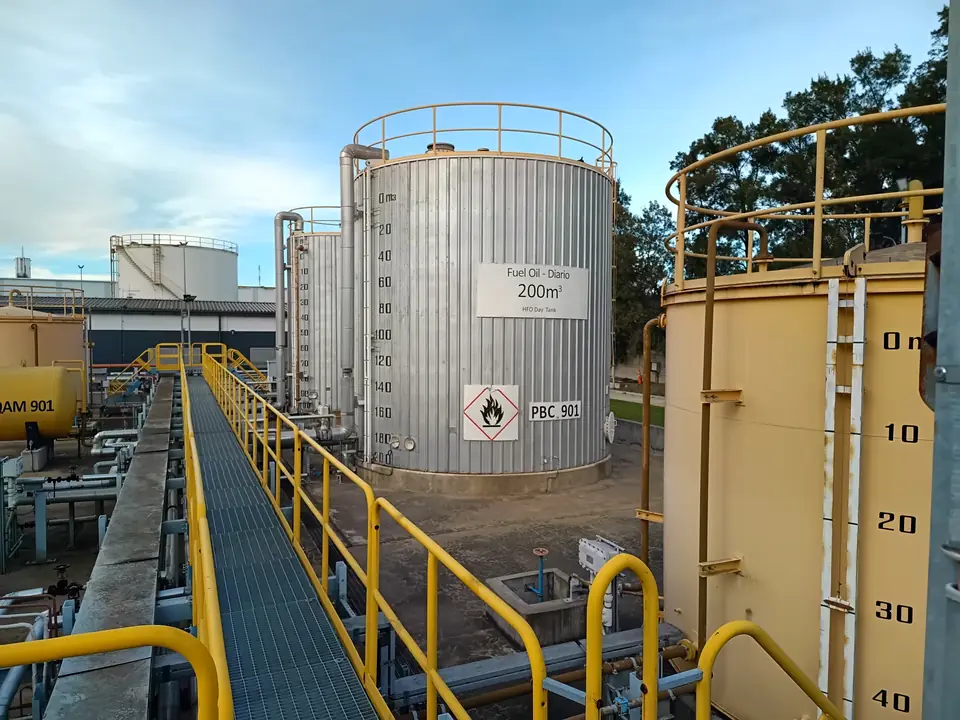
Auditorías de seguridad
Auditorías de seguridad de instalaciones de hidrocarburos
Dos actividades principales:
- Verificación de funcionamiento y seguridad de instalaciones inscriptas en el Registro de la Secretaría de Energía (auditores habilitados para categorías A1 a C3, Res. 404/94).
- Inscripción y habilitación en el Registro de Bocas de Expendio (Res. 1102/04): evaluación del proyecto de obra, verificación de condiciones de seguridad y asesoramiento en el proceso de alta de la instalación.
Auditorías de Seguridad
Verificación de funcionamiento y seguridad de planta
- Res. 404/94
- Res. 1296/08
- Ley 13.660/48
- Decreto 10.877/60
Auditamos instalaciones alcanzadas por el marco normativo de Secretaría de Energía.
Categorías
- A1
- A2
- B1
- B2
- B3
- C1
- C2
- C3
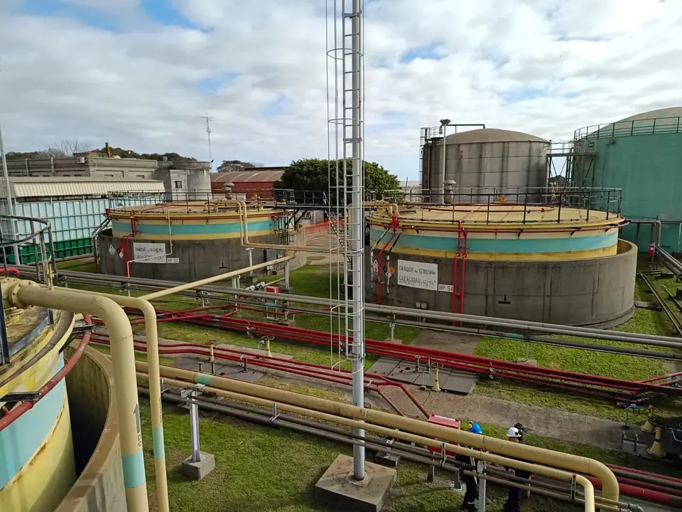
Nuevas instalaciones
Inscripción y habilitación de nuevas instalaciones
- Res. 1102/04
- Res. 419/98
- Evaluación del proyecto de obra
- Verificación de las condiciones de seguridad
- Asesoramiento durante todo el proceso de alta
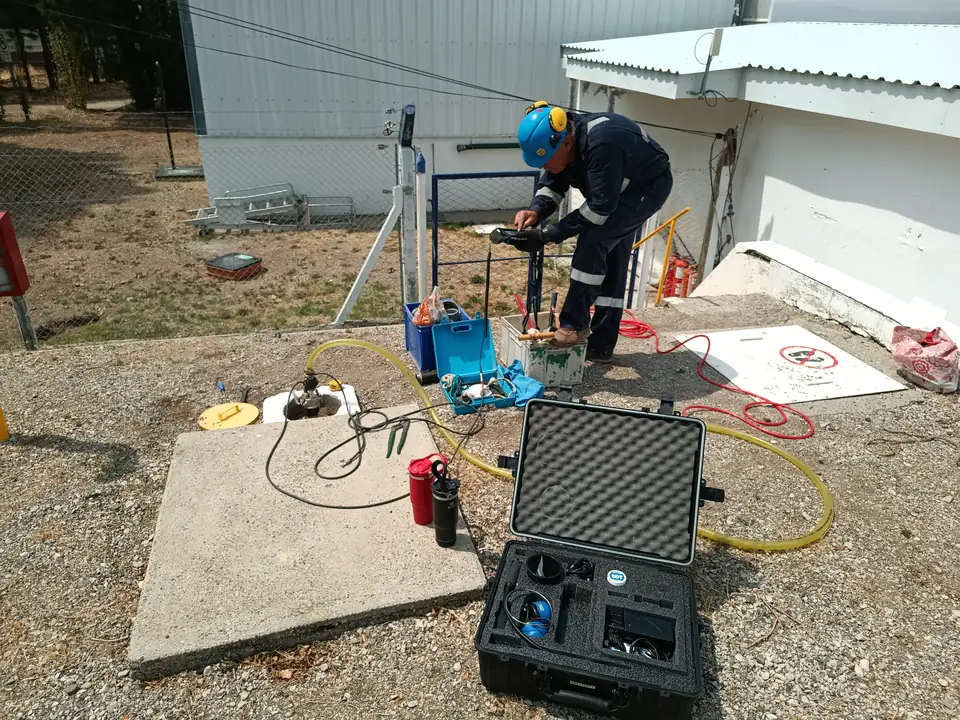
Proceso
¿Cómo realizamos una auditoría?
[A completar]
[Descripción de la etapa]
[A completar]
[Descripción de la etapa]
[A completar]
[Descripción de la etapa]
[A completar]
[Descripción de la etapa]
Experiencia
¿Qué instalaciones auditamos?
Refinerías, centrales térmicas, parques de esferas, plantas petroquímicas y emplazamientos mineros.
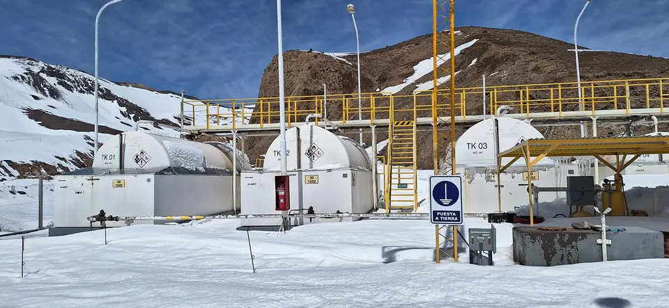
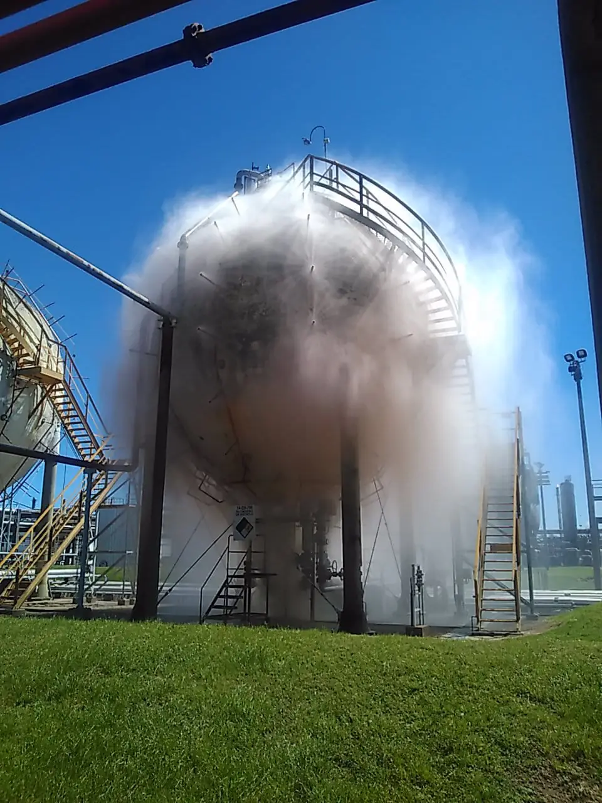

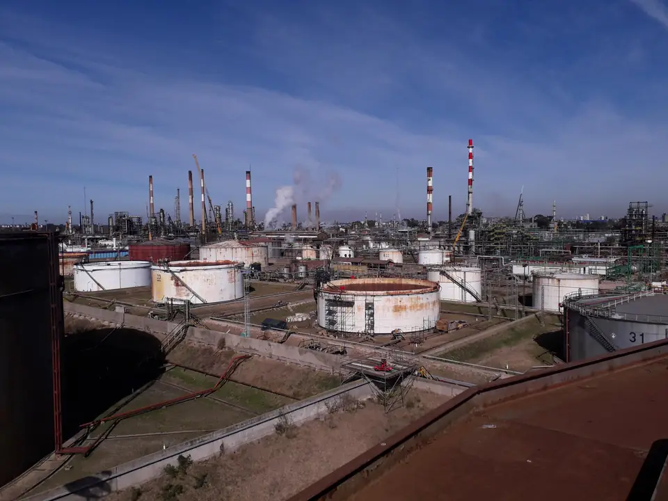
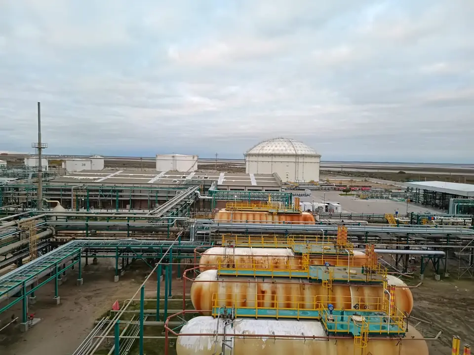
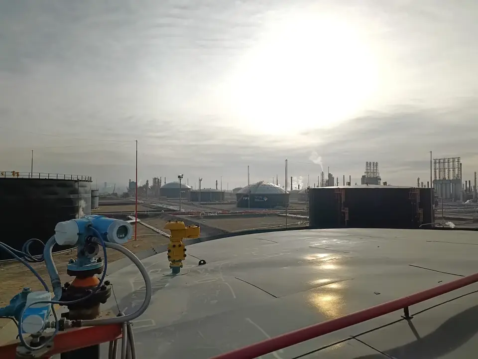
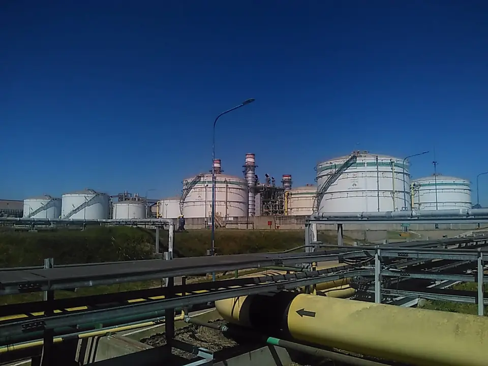
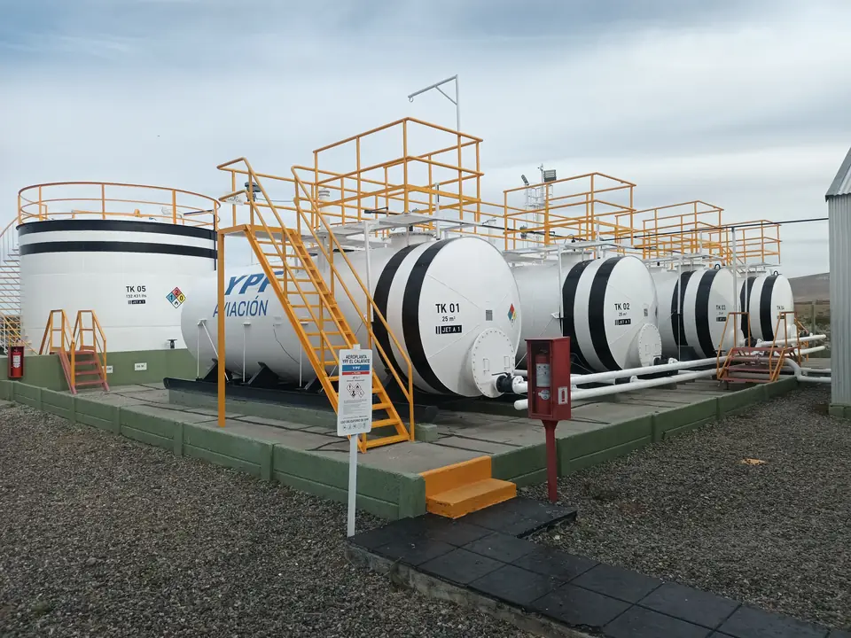
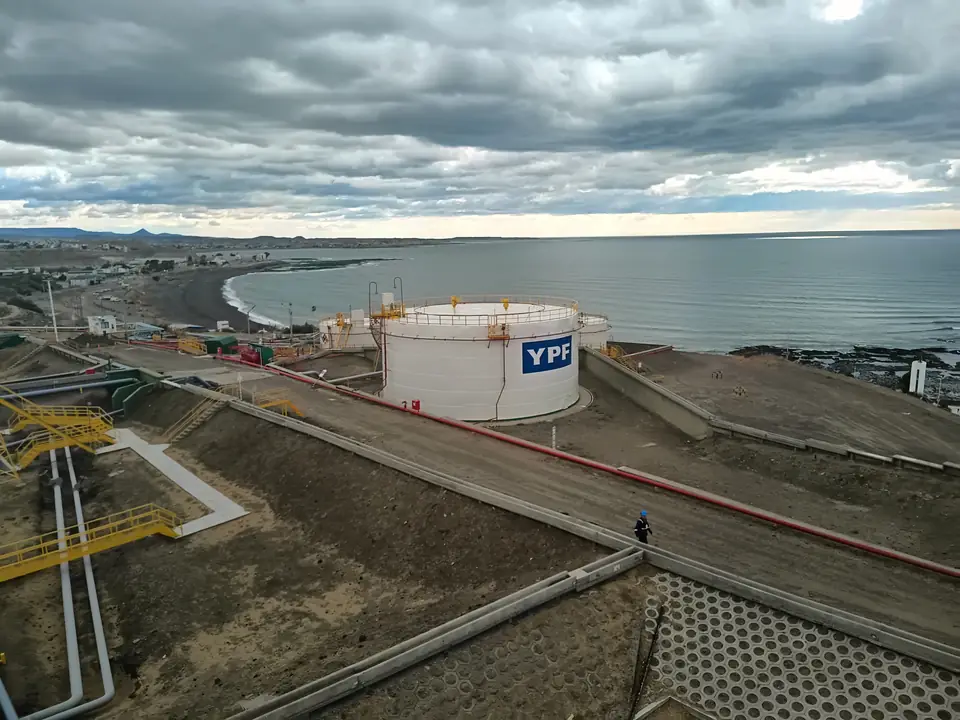

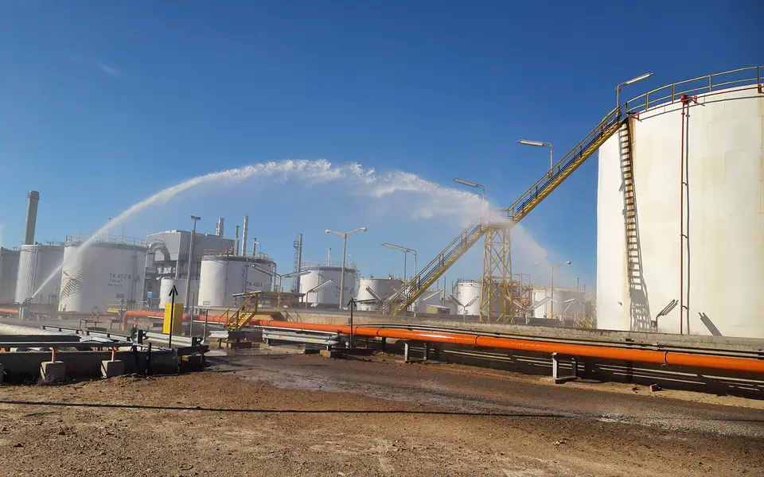
Preguntas frecuentes
Lo que suelen consultarnos
¿Qué normativa se aplica?
Para instalaciones en funcionamiento, la Res. 404/94, la Res. 1296/08, la Ley 13.660/48 y el Decreto 10.877/60. Para nuevas instalaciones, la Res. 1102/04 y la Res. 419/98.
¿Con qué frecuencia se realizan las auditorías?
[A completar]
¿Qué se necesita para inscribir una nueva instalación?
[A completar]